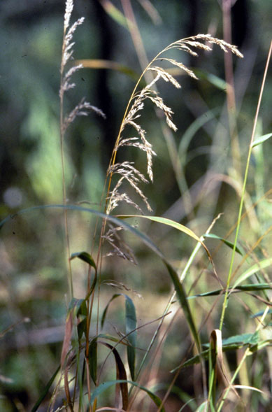
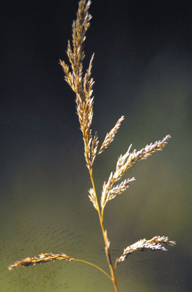
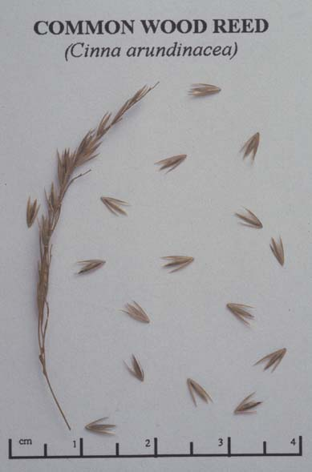

Cinna Arundinacea
Family: Poaceae
Common Wood Reed
Swink/Wilhelm # 5


Click to view larger photo
FLOWERING: Early August
SEED TIMING: Mid-October through November
HABITAT: Moist woodlands and floodplains. Also moist clearings and muddy pond margins in upland woods.
DIAGNOSTIC FEATURES: 3 - 6 feet high. A very tall grass with a large feathery, full inflorescence about 6 inches long. Wide, coarse, folded leaves which taper to a point. The gray-green panicle turns staw-colored when ripe.
TO PICK: Dry, light-tan seeds strip easily from panicle when fully ripened. Sometimes it is necessary to pick when the seed is not entirely ripe. In such a case it is best to clip the stalk and allow seeds to ripen in a paper bag.